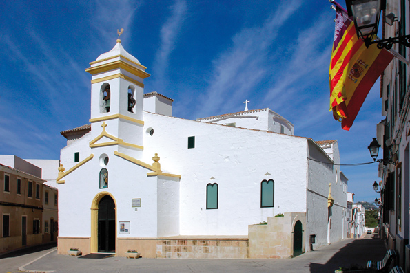
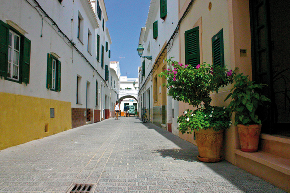

Es Migjorn Gran, calme et accueillant
Es Migjorn Gran est incontestablement un village calme et accueillant. Ses habitants sont des personnes agréables et sympathiques. Ses rues et ses places montrent l’enchantement d’un lieu où il est agréable de se promener paisiblement, en prenant le temps de contempler les maisons, les magasins, les jardins, et les bâtiments…ou bien même d’apprécier l’insouciance d’enfants qui jouent dans les espaces public.
Le monument le plus remarquable est la paroisse, située dans le centre urbain, partageant la Place avec la Mairie et une banque.
Es Migjorn Gran, se trouve à l’extérieur du parcours de la route principale de l’Île ; l’artère qui unit Maó et Ciutadella, passant par Alaior, Mercadal et Ferreries. On accède à Es Migjorn soit par une route secondaire qui débute à un point déterminé de la route principale entre Alaior et Mercadal, ou bien directement par les villages voisins Ferreries ou Mercadal.
Sa localisation en marge de la route principale de Minorque, participe à conserver et renforcer son caractère particulier et le tempérament du village et de ses habitants.
La richesse de cette commune se trouve dans sa dualité: comme petit village (seulement 1500 habitants) et à la fois très bien desservie: une mairie, des plages magnifiques à moins de cinq minutes en voiture, un centre sanitaire, une école publique (jusque l’âge de douze ans), une école maternelle (de 0 à 3 ans), un centre gériatrique, une pharmacie, une station de taxi, un complexe sportif avec un stade de football, des pistes de tennis, une salle omnisports, un gymnase, un club de futsal (football en salle), flag rugby…ajoutons à cela une offre variée de magasins (deux boulangeries, deux boucheries et deux supermarchés), des bars et des restaurants, également un petit hôtel et un hôtel rural. Dans la périphérie du village se trouve un petit polygone industriel, où sont concentré la plupart des entreprises de la commune: menuiseries, mécaniciens, autocars et minibus, usine de chaussures, quincaillerie, transporteurs, entrepreneurs en bâtiment, peintres, plombiers, électriciens…
De plus, l’esprit associatif est très présent: Amis de l’Art, Groupe de Musique, Association des parents d’élèves, Groupe Folklorique, Club Hippique, Club Agility, etc.
La municipalité d’Es Migjorn Gran occupe la partie centrale du sud de l’Île de Minorque, le village a été fondé il y a environ 250 ans, fruit de la volonté commune des habitants de la zone, devenue commune indépendante en 1989, cela fait maintenant 25 ans….
Bien qu’au point de vue des statistiques le secteur primaire est encore loin du secteur secondaire et encore plus du tertiaire, Es Migjorn a toujours quelques propriétés agricoles en activité, ce qui contribue à la conservation du paysage rural et agraire. En plus, des rues qui forment le centre de la vieille ville, ces quarante dernières années, la localité n’a cessé de croître avec la construction de la Place Menorca, Place Maestro Andreu Ferrer, Avenue Binicudrell, Avenue de la Mar, Avenue David Russell, etc.…
Es Migjorn Gran est reconnue dans tout Minorque de par son excellence dans le domaine de la musique. Plus de la moitié des écoliers apprennent la musique à l’École de Musique Municipale. Outre le célèbre orchestre de musique, il y a la Chorale Paroissiale, la Chorale et d’autres groupes musicaux, le groupe de trompettes, de tambours, etc.… Sans oublier bien sûr, le grand guitariste classique David Russel qui a grandi à Es Migjorn.
Terminons le compte-rendu sur Es Migjorn Gran, en évoquant deux de ses points forts: les ensembles de talayotes et les plages de la limite municipale.
 Tout d’abord, Es Migjorn Gran est le village qui possède le plus de monuments mégalithiques. Il faut évidemment nommer les deux talayotes de Binicudrell, situés entre le collège public Francesc d'Albranca et le cimetière; qui lui, se situe dans le domaine de Santa Mònica; le faubourg de Sant Agustí Vell; la salle hypostyle de Binigaus Nou...etc.
Tout d’abord, Es Migjorn Gran est le village qui possède le plus de monuments mégalithiques. Il faut évidemment nommer les deux talayotes de Binicudrell, situés entre le collège public Francesc d'Albranca et le cimetière; qui lui, se situe dans le domaine de Santa Mònica; le faubourg de Sant Agustí Vell; la salle hypostyle de Binigaus Nou...etc.
Ensuite, la commune possède sept plages, dont une seule est urbanisée: Santo Tomàs. Ainsi donc, autour du noyau touristique de Santo Tomàs, nous pouvons jouir des plages d’Atalis (située à l’est), San Adeodato, Binigaus, Cala Escorxada, Cala Fustam et Trebalúger. Santo Tomàs possède une offre très vaste aussi bien en résidences qu’en restauration, avec un magnifique bord de mer, un service médical présent pendant six mois et une pharmacie en activité toute l’année.
Finalement, il est normal de mettre à l’honneur la célèbre Cova des Coloms, qui se situe dans le précipice de Binigaus. Il s’agit d’une grotte naturelle avec des dimensions peu communes: 110 mètres de long, 15 de large et.24 de haut! Raison pour laquelle on la surnomme La Cathédrale. La grotte est incrustée dans la falaise orientale du précipice de Binigaus. Jusqu’à son accès, est une grande œuvre de la nature, il est aujourd’hui clairement signalé.
En résumé, visiter et connaître es Migjorn Gran c’est prendre contact avec une population vivante et dynamique mais aussi traditionnelle et moderne. C’est en définitive un village authentique!